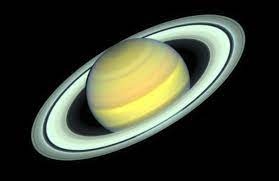

NASA MARTE SATURNO LUA

Saturno é o sexto planeta a partir do Sol e o segundo maior do
Sistema Solar atrás de Júpiter. Pertencente ao grupo dos gigantes
gasosos, possui cerca de 95 massas terrestres e orbita a uma
distância média de 9,5 unidades astronômicas.